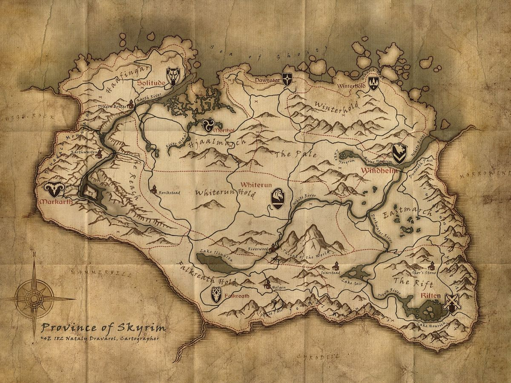
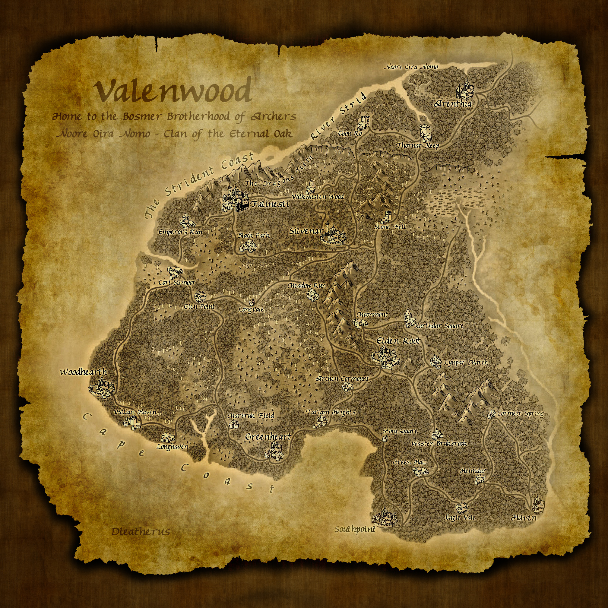

Нирн - это планета, на которой живут многие расы, от людей до звереподобных существ и эльфов.
Это мир, где интриги даэдра переплетаются с людскими желаниями, а Аэдра, сидящие сверху,
наставляют на путь истинный.
Как устроен этот мир?
Нирн разделён на несколько континентов: Акавир, Тамриэль, Атмора и архипелаг Пиандонея.
Вокруг планеты вращается два спутника - Массер и Секунда, по легендам, состоящие из плоти бога,
который создал Нирн.
Провинция континента Тамриэль, родина тёмных эльфов, данмеров.
Она состоит из континентальной части и острова с вулканом - Красная гора.
Столицей был город Морнхолд до вторжения аргонианской расы. К сожалению,
в начале четвёртой эры взрыв вулкана, бесконечные землятресения и цунами
оставили остров совсем безжизнненным, покрытым пеплом. Бежавшие данмеры
переселились в Скайрим, Солстейм и в другие провинции.
Скайрим
Основные города
Вайтран - центр Скайрима, Драконий предел
Солитьюд - столица Скайрима
Маркарт - кровь и серебро
Рифтен - воры и рыбалка
Виндхельм - жестокие морозы и оплот повстанцев
Винтерхолд - бывшая столица, магическая коллегия
Рифтен - леса и охота
Данстар - шахты и море Призраков
Морфал - болота, ядовитые колокольчики и мистика

Валенвуд
Родина лесных эльфов, босмеров.
Известно, что эта земля заполнена вековыми деревьями, на которых построены
босмерские хижины. Они почитают лес, лбое приченение вреда их материнским
деревьям карается смертью. Это одна из самых разнообразных провинций с точки
зрения флоры и фауны.
<>

Сиродил
Имперская провинция, находится в центре Тамриэля. Сам Сиродил - это столица Империи.
Их релегия и солдаты распространены почти по всему Тамриэлю. Здесь исконно живут
имперцы - раса людей, имеющая магическую предрасположенность. Огромное количество гильдий,
известные университеты и бибилиотеки, полные старинных фолиантов и даже священными
Древними свитками - всё это можно найти дома у имперцев.